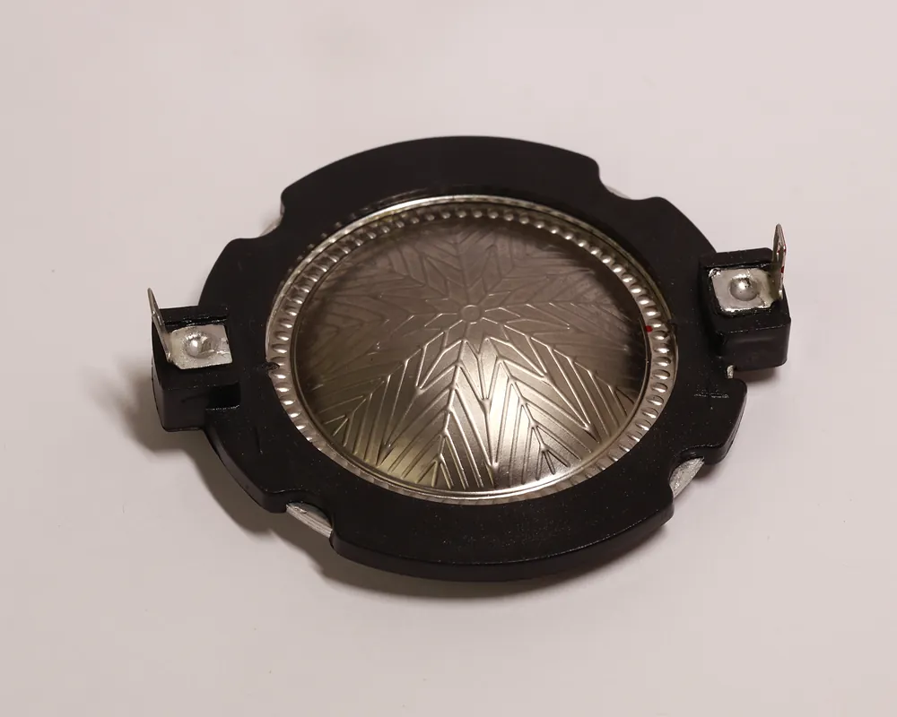
FrenteDiafragma em titânio
Foto do produto · frente e verso
Fábrica em Taboão da Serra, SP · 28 anos
Há 28 anos no mercado, fabricando com excelência e sob medida, no projeto ou na amostra de cada cliente. Atendemos clientes em todo o Brasil e na América Latina.
Orçamento sem compromisso. Envie o projeto, uma amostra ou uma foto da peça.
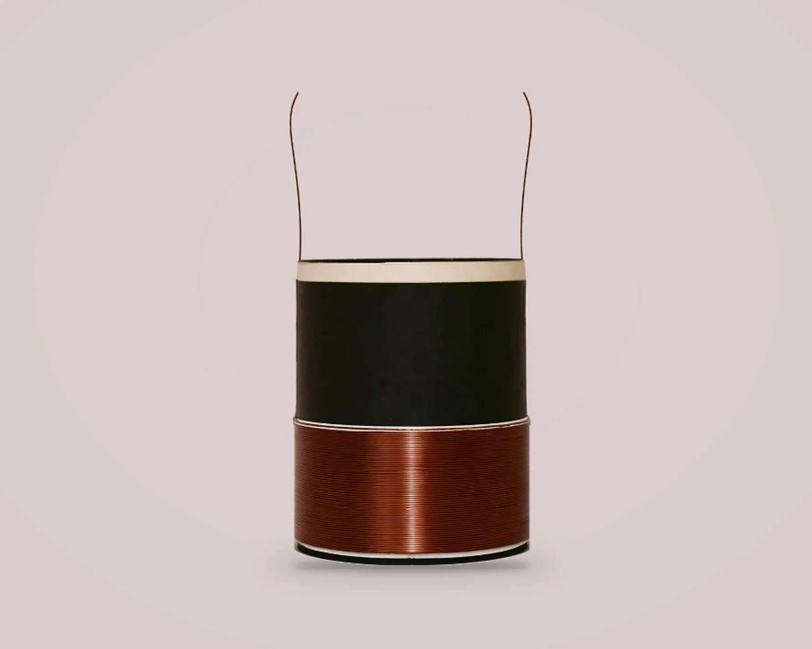
Quem somos
A Nova Look Som é uma fábrica de bobinas para alto-falantes e de reparos para drivers e tweeters, com 28 anos no mercado. Fica em Taboão da Serra, na Grande São Paulo, e vende para fabricantes de alto-falantes e lojas de som de todo o Brasil e de países da América Latina. Também vende drivers.
Tudo é feito sob medida: o cliente envia o projeto, uma amostra ou uma foto da peça e recebe o orçamento pelo WhatsApp (11) 97719-4026.
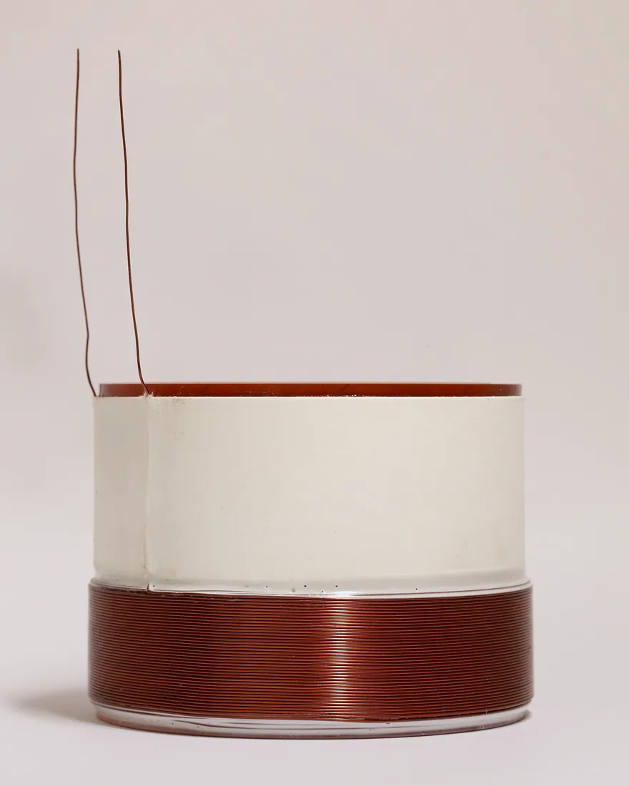
Produtos
Você negocia com quem produz, sem intermediário. Do lote pequeno ao pedido programado.
Simples ou duplas, para woofers, subwoofers e médios. Corpo em kapton, alumínio ou fibra, no diâmetro e no enrolamento do seu projeto.
Ver bobinasDiafragma fenólico, poliimida ou titânio, com bobina da casa, no modelo do seu driver. Envie o projeto ou uma amostra.
Ver reparosReparos sob medida para tweeters, com diafragma fenólico, poliimida ou titânio, para o agudo voltar a tocar como novo.
Ver reparosDrivers completos para quem monta ou reforma sistemas de som. Consulte os modelos disponíveis.
Consultar modelosDe acordo com o seu projeto.
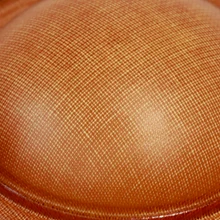
Fenólicos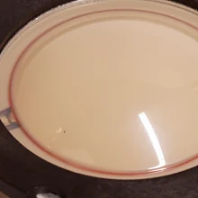
Poliimida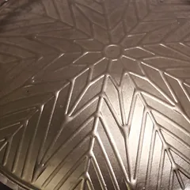
TitânioAs amostras de diafragma são fotos das peças.
Bobinas para alto-falantes
Produzimos bobinas para woofers, subwoofers e médios, no diâmetro, no material e no enrolamento do seu projeto. É a peça que define como o alto-falante toca, por isso cada uma sai da fábrica pronta para o seu modelo.
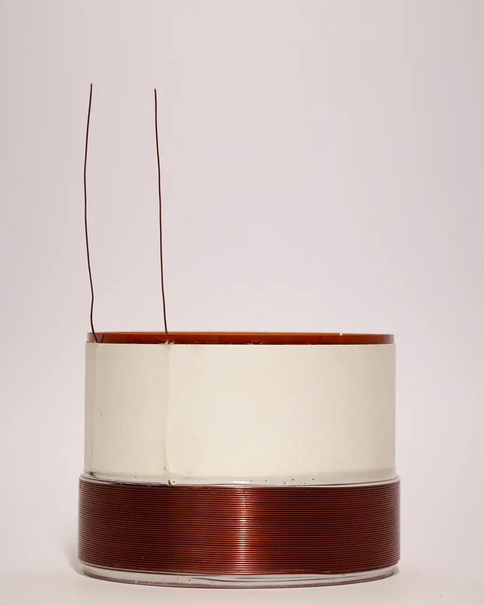
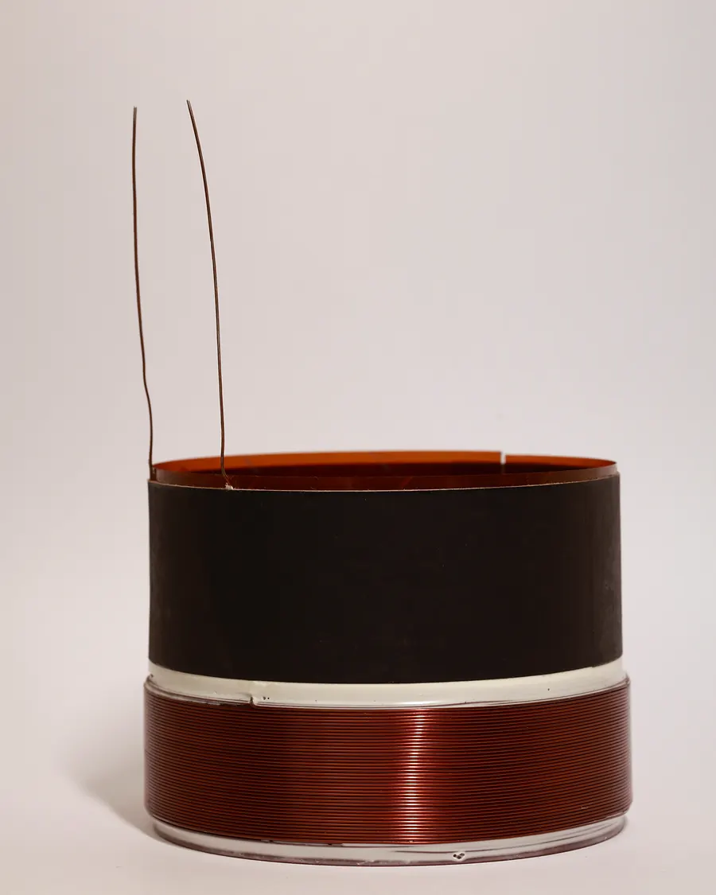
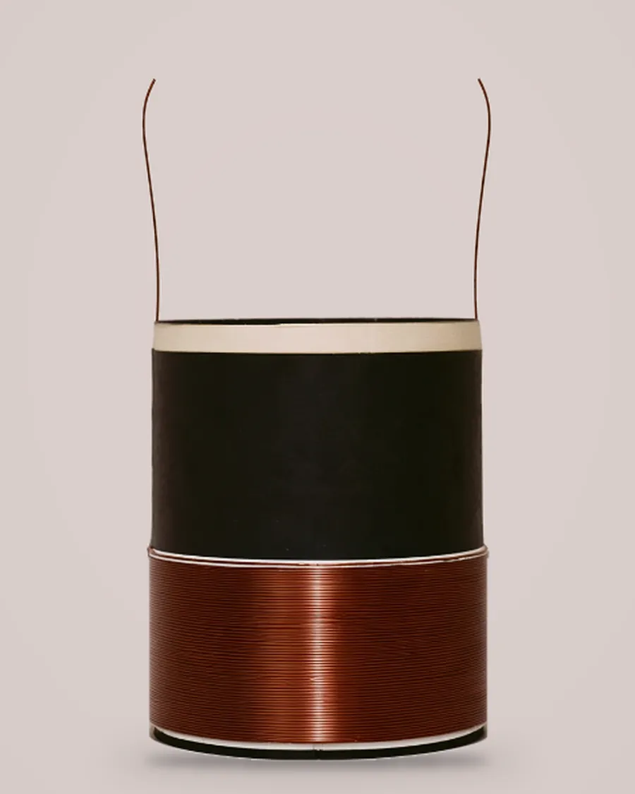
Fotos do produto · bobinas feitas na fábrica, cada uma no projeto do cliente
Reparos para drivers e tweeters
O reparo é o conjunto de reposição do driver ou do tweeter: o diafragma, a bobina e os terminais, montados no aro. Você envia o projeto ou uma peça de amostra e a gente produz no seu modelo.

FrenteFoto do produto · frente e verso
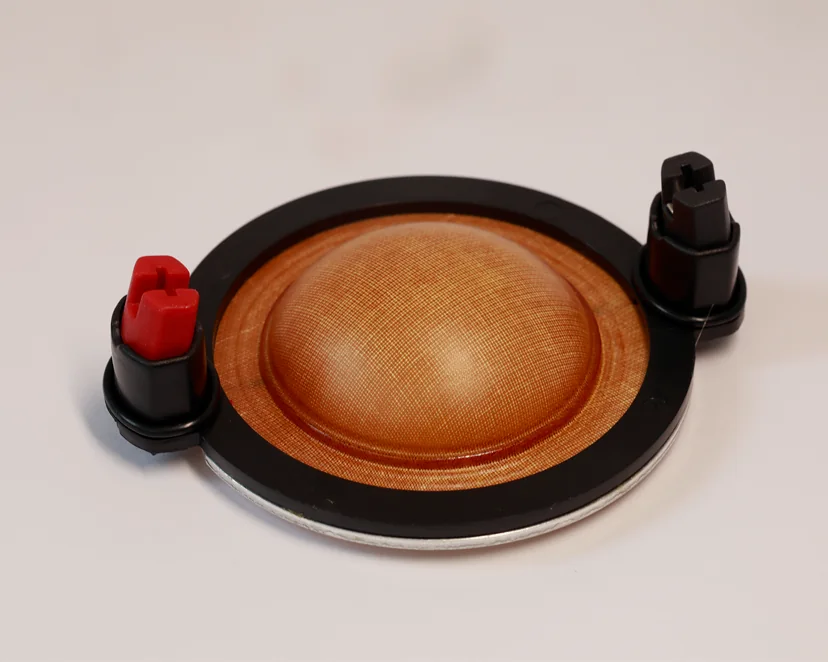
FrenteFoto do produto · frente e verso
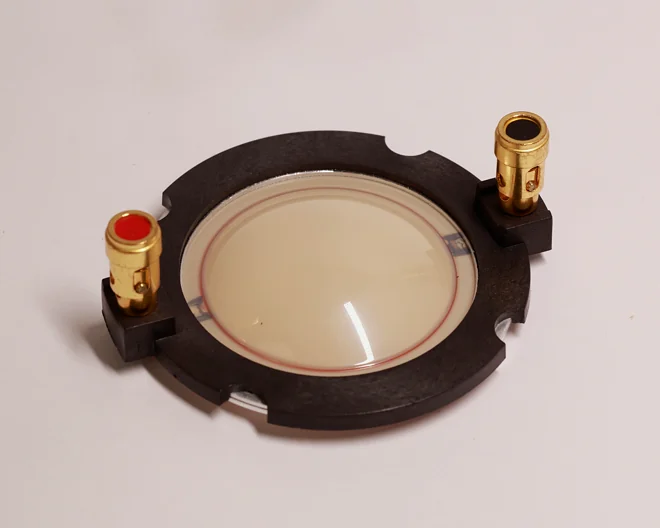
FrenteFoto do produto · frente e verso
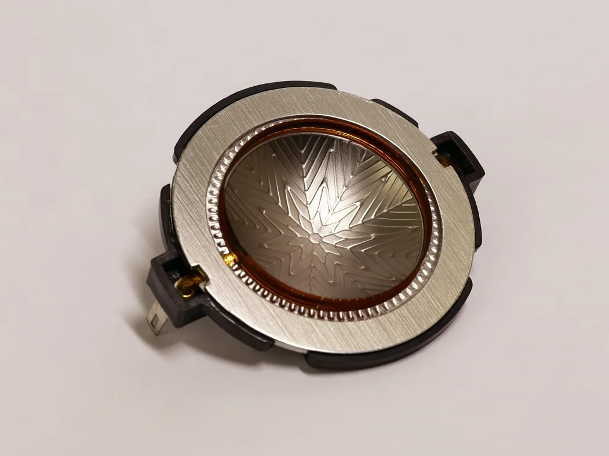
Sob medida
Cada bobina é feita para o alto-falante do cliente. Para orçar, precisamos destas informações. Se preferir, mande uma foto da bobina que você precisa.
Enviar especificaçãoFicha de especificação · bobinaPreencha no WhatsApp
Como pedir
Você não precisa ter a ficha técnica completa. A gente ajuda a chegar na peça certa.
Projeto, ficha técnica, uma amostra ou só uma foto da peça.
Respondemos pelo WhatsApp ou por e-mail, sem compromisso.
Bobinas e reparos sob medida, com matéria-prima de alta qualidade.
Para todo o Brasil e países da América Latina.
Clientes
28 anos atendendo com excelência e buscando satisfazer cada vez mais nossos clientes e parceiros.
Para quem
Para fabricantes
Bobinas na sua especificação, com pedidos programados e prazo combinado.
Para lojas
Bobinas, reparos de drivers e tweeters e drivers, em lotes pequenos, para reposição e revenda.
Dúvidas frequentes
Não encontrou a sua dúvida? Fale direto com a fábrica.
Tirar dúvida no WhatsAppSim. Atendemos clientes em todos os estados do Brasil e em alguns países da América Latina.
Sim, é o nosso trabalho principal. Envie o diâmetro, o material do corpo, o fio e a bitola, os dados do enrolamento e a quantidade. Se não tiver tudo, mande uma foto da bobina e a gente ajuda.
Sim. Fazemos reparos com diafragma fenólico, poliimida ou titânio, no modelo da sua peça. Envie o projeto ou uma amostra, a impedância e a quantidade.
Sim. Envie uma amostra ou uma foto da peça e a gente ajuda a chegar no modelo certo.
Sim. Atendemos desde lotes pequenos, para a reposição de lojas, até pedidos programados para fabricantes.
Sim. Fale com a gente para consultar os modelos disponíveis.
Não. A Nova Look Som vende para empresas: fabricantes de alto-falantes e lojas. Se você precisa consertar o seu som, procure uma loja de som da sua região.
Pelo WhatsApp (11) 97719-4026, pelo e-mail atendimento@novalooksom.com.br ou pelo formulário abaixo.
Contato
Mande a especificação, uma amostra ou uma foto da peça que você precisa. Respondemos com o orçamento, sem compromisso.